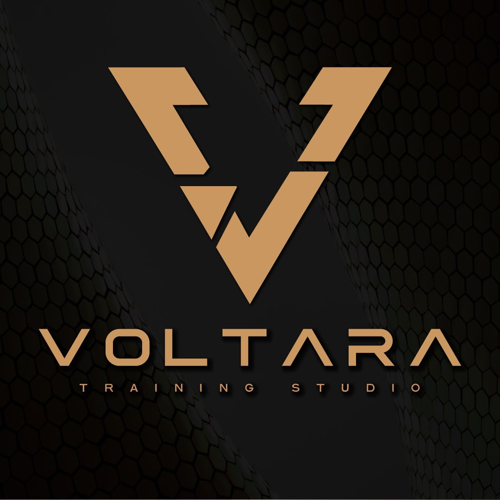
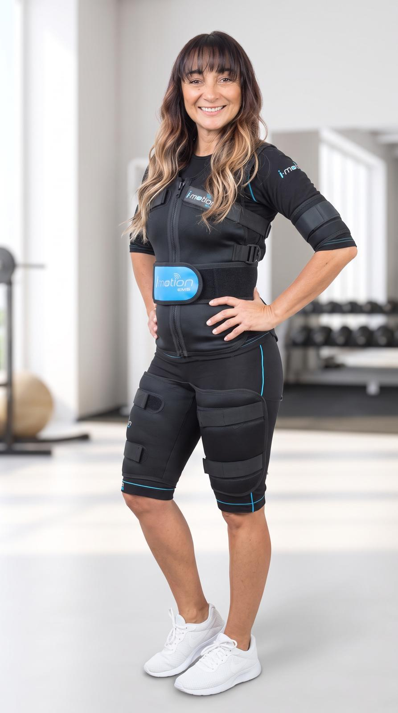

Tecnología que activa tu cuerpo
Descubre una nueva forma de entrenamiento utilizando electroestimulación muscular. Una tecnología innovadora que permite activar múltiples músculos al mismo tiempo y optimizar el rendimiento del entrenamiento. Esto no busca suplantar el ejercicio si no potenciarlo.
Prioriza tu bienestar, prioriza tu salud
La electroestimulación muscular utiliza impulsos eléctricos controlados para estimular los músculos. Estos impulsos imitan las señales naturales que el cerebro envía al cuerpo cuando realizamos un movimiento. Este sistema permite realizar entrenamientos más eficientes, optimizando el tiempo y mejorando los resultados físicos.

Profesional especializada en entrenamiento y electroestimulación muscular. Su enfoque está orientado a mejorar la condición física, el bienestar y el desarrollo muscular mediante tecnología aplicada al entrenamiento.
Para consultas o reservas puedes comunicate.
Profesora: Gissell Huelmo
Teléfono: 099 210 492
Instagram: voltara.ems